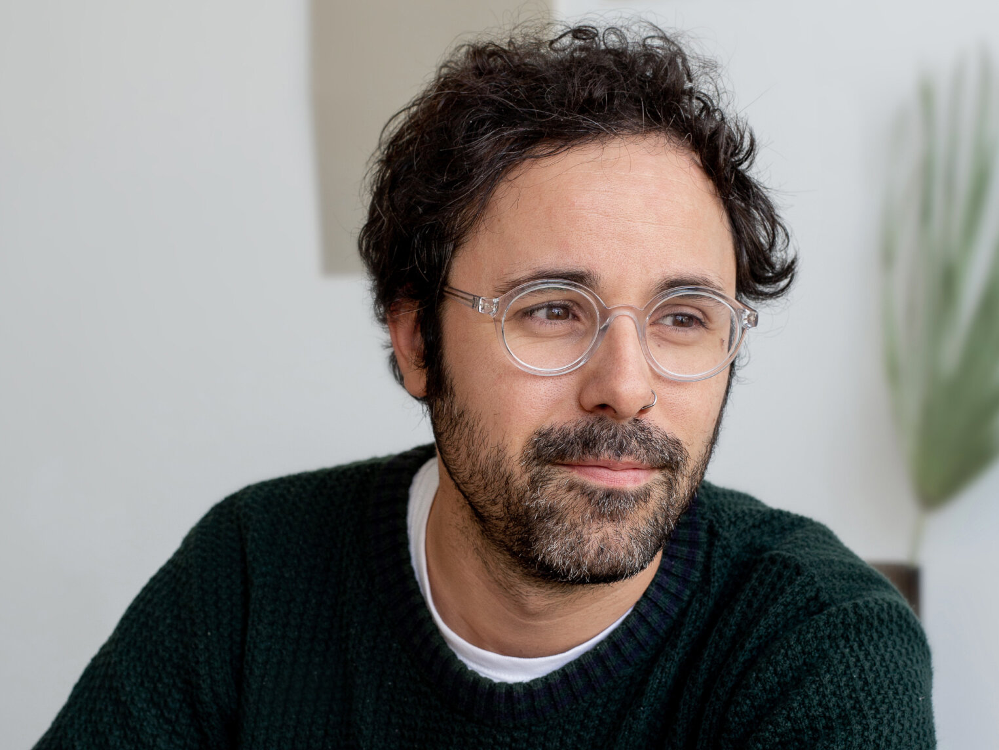

Every Dollar Funds Prevention
Your gift places emotional intelligence tools into communities, schools, and organizations across Florida and Nevada, before a crisis arrives. Donations are processed securely through Zeffy.
Your Gift at Work
Looking for more than a one time gift? Visit our shop for distribution packages and supporter gear.
What Your Support Makes Possible
- Place books directly into communities. Every dollar helps fund the purchase and distribution of emotional intelligence books informed by emotional wellness research, placed into neighborhoods, schools, events, and organizations across Florida and Nevada.
- Reach people before crisis takes hold. This work is prevention focused. Your support helps build emotional awareness and practical coping skills in people's lives before stress deepens into something harder to treat.
- Expand access without barriers. Many people will never walk into a therapist's office. But they will engage with a resource placed in their hands. Your donation funds that access point.
- Support your community. Cape Coral, Fort Myers, Fort Myers Beach, Babcock Ranch, Estero, Bonita Springs, Naples, and Marco Island, plus Las Vegas, Nevada, are all part of our distribution cycle. Your gift helps us reach all of them.
- Fund a growing foundation. The Guided Pathway Foundation is in an early stage and building toward long term impact. Contributions at this stage directly shape how far the foundation can reach in its first year and beyond.
- Invest in lasting community change. Emotional intelligence builds over time. The books we distribute are tools people return to. Your support does not just help someone once, it helps them develop skills they carry forward.

Donation FAQ
Is my donation tax deductible?
Yes. The Guided Pathway Foundation is a registered 501(c)(3) nonprofit organization. Your donation is tax deductible to the full extent permitted by law. You will receive an official donation receipt by email following your contribution. Our EIN is 41-4735497.
What does the General Fund support?
Donations to the General Fund support the foundation's core operations including book purchasing, community distribution logistics, outreach efforts, and program development across our Southwest Florida and Las Vegas, Nevada service areas. Every dollar is directed toward expanding access to emotional wellness tools for individuals, families, schools, and organizations.
Donations may support:
- Emotional intelligence book purchasing
- Printing and fulfillment
- Community distribution logistics
- Outreach events
- School and organization partnerships
- Program development
- Administrative costs necessary to operate the foundation
Can I volunteer instead of donating?
Yes. If you are interested in supporting the foundation through volunteer work, community outreach, or partnership, we would love to hear from you. Reach out through our contact page and tell us a little about how you would like to get involved.
Do you accept in kind contributions?
We are open to in kind contributions that align with our mission and programs. Please contact us directly at info@theguidedpathwayfoundation.com to discuss what you have in mind and whether it is a fit for our current needs.
Can I donate in honor or in memory of someone?
Yes. If you would like to make a donation in honor or in memory of someone, please include their name in the notes field during checkout or send us an email after your donation and we will acknowledge it in your receipt.
Questions about donating? Reach us at info@theguidedpathwayfoundation.com.
Thank You for Believing in This Work
Whether you give once or choose to contribute regularly, your investment in this foundation is an investment in the people who make up this region. We are grateful for every person who chooses to be part of what we are building.